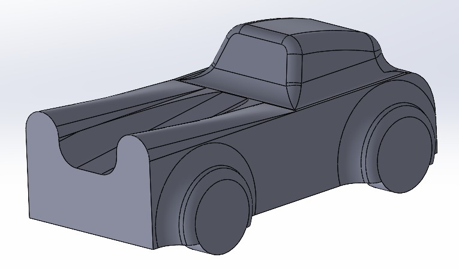
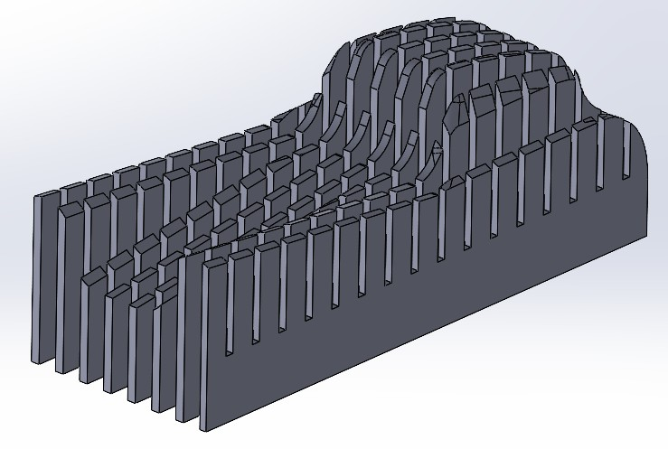
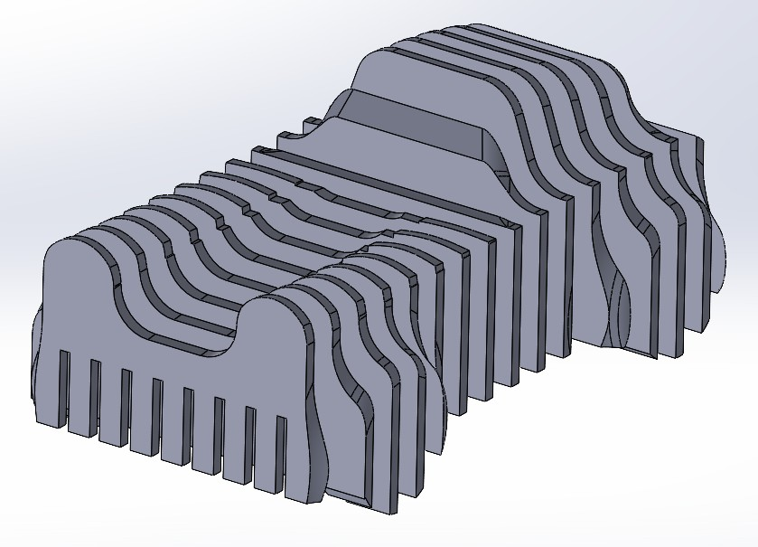
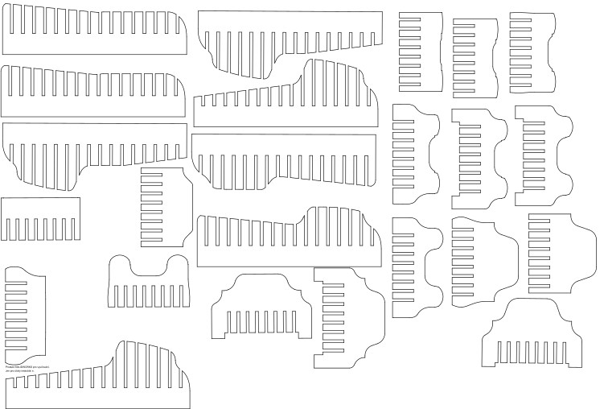
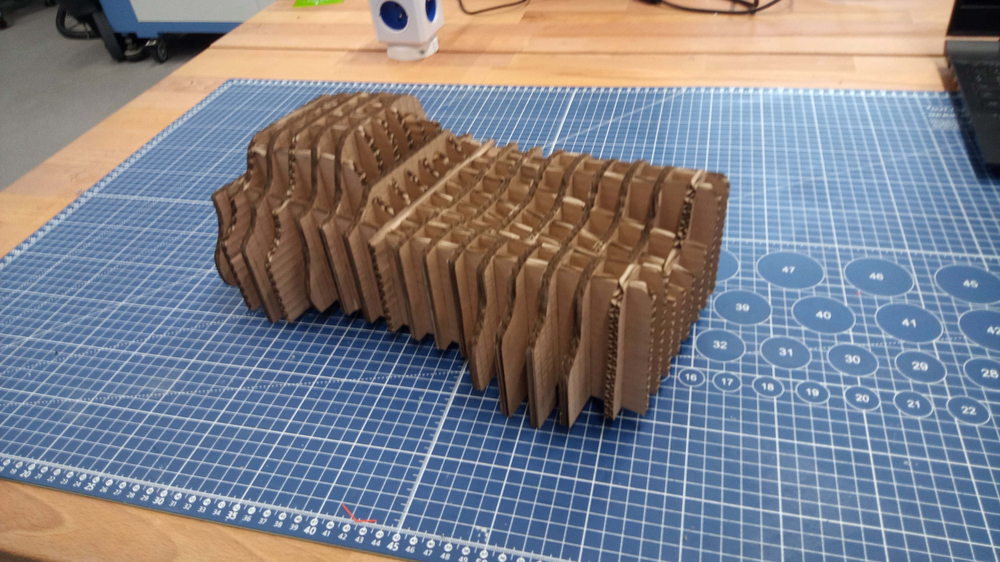
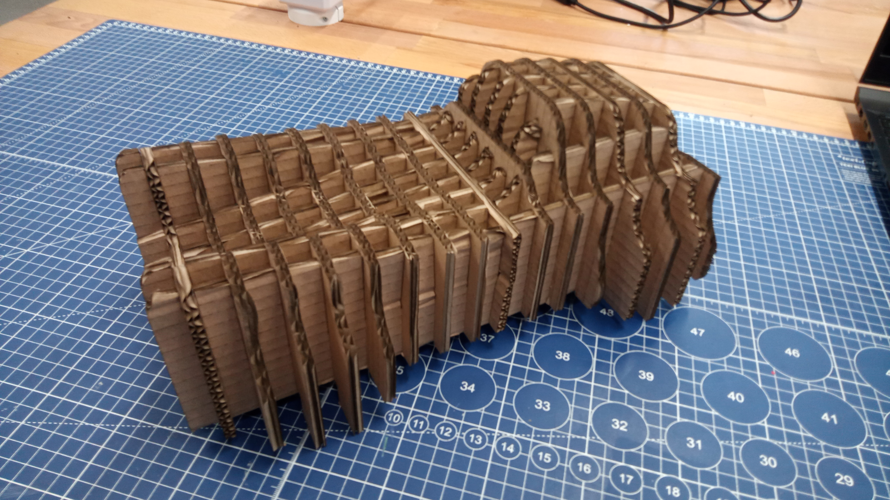
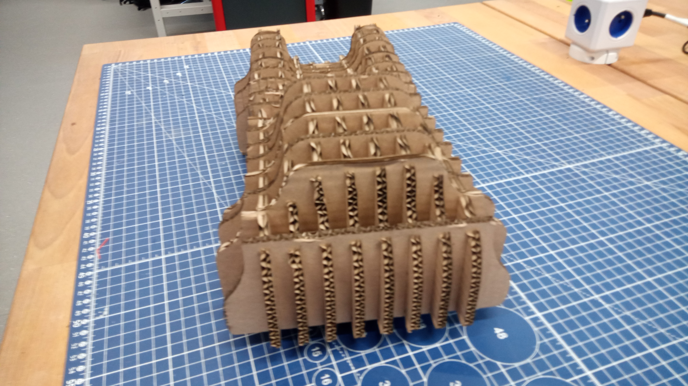
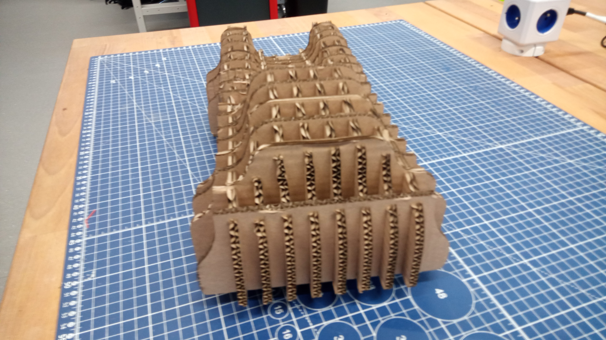

Výroba kartonového modelu pomocí laserového řezání
Na základě vlastního návrhu byl v programu SolidWorks vytvořen 3D model konstrukce (viz obr. 1). Model byl navržen dle vlastní fantazie s ohledem na následnou výrobu z kartonového materiálu.
Po dokončení návrhu byl model rozdělen na jednotlivé konstrukční díly určené k výpalu na laserové řezačce. Nejprve byly vytvořeny podélné díly, následně příčné díly (viz obr. 2 a 3). Aby bylo možné jednotlivé prvky přesně sestavit, byly do modelu doplněny zámky, které zajišťují vzájemnou polohu dílů.
 Hotový CAD model byl následně převeden do 2D formátu DXF, který slouží jako podklad pro přípravu dat pro laserové řezání. DXF soubory byly importovány do programu Inkscape (viz obr. 4), kde byly optimalizovány pro výřez z kartonové desky a rozmístěny tak, aby bylo dosaženo co nejefektivnějšího využití materiálu. Z tohoto programu byla následně exportována data pro laserovou řezačku.
První pokus o řezání neproběhl optimálně. Laser byl nastaven na maximální výkon 55 %, minimální výkon 50 % a rychlost posuvu 55 mm/s. Tyto parametry se ukázaly jako nedostatečné, neboť u části dílů nedošlo k úplnému prořezu materiálu a některé bylo nutné dodatečně dořezávat ručně.

Zámky o šířce 5 mm fungovaly velmi dobře v případech, kdy do jednoho dílu byly zasazeny maximálně čtyři další díly vedle sebe. V mém návrhu však bylo nutné vložit až šestnáct příčných dílů, což vedlo k deformaci a prohnutí podélných dílů (viz obr. model 1).


Z toho důvodu byl proveden druhý pokus s upravenými parametry laseru — maximální výkon 70 %, minimální výkon 65 % a rychlost 55 mm/s. Při těchto hodnotách se podařilo jednotlivé díly zcela oddělit bez nutnosti dodatečných úprav. Výsledné výřezy byly také estetičtější a přesnější (viz obr. vypálené díly).
  

Díky drobným úpravám zámků, které nyní umožňovaly větší vůli mezi spoji, bylo sestavení modelu výrazně snazší. Celkový výsledek je patrný na obr. XY, kde je zobrazen kompletně sestavený kartonový model.